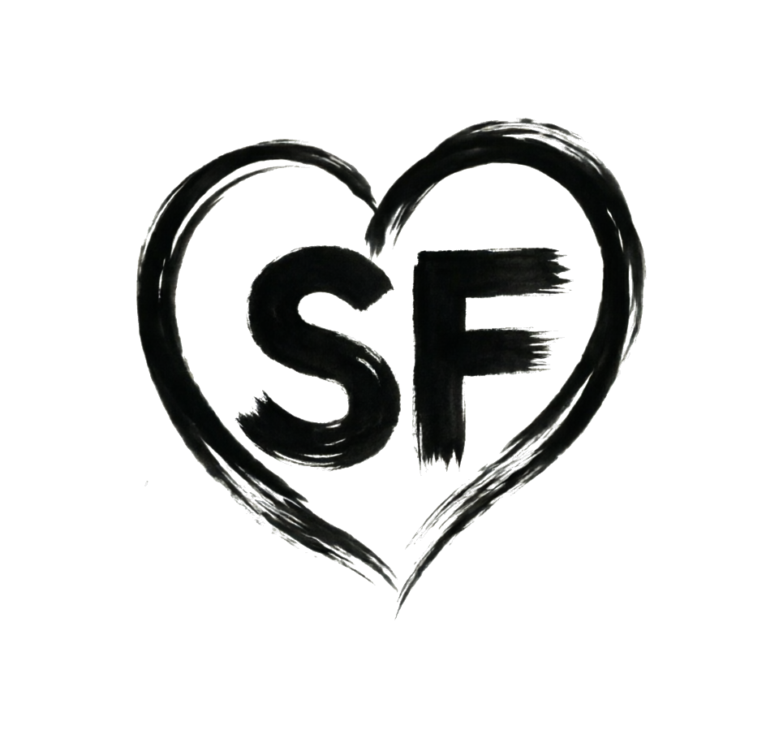

A4C · ED HR 72 bpm
SonoForge
Платформа для эхокардиографического анализа
Запуск SonoForge…
Дизайн-превью для splash screen 3–4 с в духе AnythingLLM Desktop, но для клинического приложения эхокардиографии. Внизу — как это устроено в коде Qt (PySide6).

💡 Почему выбран A: он буквально повторяет структуру заставки AnythingLLM (логотип → тонкий спиннер → строка статуса), но перекрашен в фирменные тона SonoForge (тёмно-синий #102135, акцент #40e2de, Inter) и дополнен пульсирующей точкой-«пульсом» — единственный неклинически-абстрактный элемент компенсируется брендом и реальными этапами загрузки. Если хотите B или C — правки точечные, всё держится на одном модуле splash.py.